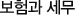

보험기본정보


근로소득자가 본인, 배우자 또는 기타 부양가족을 피보험자로 하는 보장성보험에 가입한 경우, 납입한 보험료 중 연간 100만원까지 소득공제 혜택을 받을 수 있습니다.
| 공제범위 |
- 만기환급금이 납입보험료를 초과하지 않는 생명보험 및 상해보험
- 자동차보험, 화재보험 등 가계성 손해보험
- 만기환급금이 납입공제료를 초과하지 않는 농협, 수협, 신협 및 새마을금고의 공제
|
| 특약보험료 적용 |
보장성보험 성격의 특약보험료는 전액 소득공제 (국내 특약보험료 대다수 포함) |
| 관련세법 |
소득세법 제52조(특별공제) |
만기보험금이나 계약기간 중도에 계약해지에 따른 해약환급금에서 납입한 보험료를 차감한 금액을 보험차익이라 합니다.
| 비과세범위 |
저축성보험 가입일로부터 만기일 또는 중도해지일까지의 기간이 5년 이상인 보험계약의 이자소득세에 대하여 전액 비과세됩니다. (2004년 이전 가입분부터는 7년 이상, 이후 가입분부터 10년 이상) |
| 과세방법 |
| 구분 |
과세금액 |
| 350만원 이하 |
총연금액 |
| 350만원 초과 700만원 이하 |
350만원＋350만원을 초과하는 금액의 100분의 40 |
| 700만원 초과 1400만원 이하 |
490만원＋700만원을 초과하는 금액의 100분의 20 |
| 1400만원 초과 |
630만원＋1400만원을 초과하는 금액의 100분의 10 |
|
| 관련세법 |
소득세법 제16조 (이자소득), 제129조(원천징수세율) |
개인연금보험은 노후생활자금의 준비를 위한 상품으로서, 근로소득자뿐 아니라 자영업자도 가입하여 세제혜택을 받을 수 있습니다.
| 세제혜택 요건 |
- 만20세 이상으로서 계약자, 피보험자, 수익자가 동일인일 것
- 납입기간이 10년 이상일 것
- 월100만원 이하 또는 3월마다 300만원 이하 납입할 것
- 55세 이후부터 5년 이상 연금 지급 받을 것
|
| 세제혜택 |
- 소득공제혜택 : 연간 납입보험료의 40%(72만원 한도)
- 이자소득세 비과세 : 10년 이상 보험료를 납입하고 5년 이상 연금 수령시
|
| 세제혜택 예외조건 |
- 연금 수령시 일시금으로 지급받는 경우 이자소득세 과세(중도해지로 여겨져서 기타소득세 22%를 공제)
- 가입일로부터 5년 이내 중도해지시 5년이내 해지하면 기타소득세 2.2% + 중도해지가산세 (총납입액의 2.2%)를 추징
- 연금보험 가입자 본인 외에 가족명의로 가입한 개인연금보험에 대해서는 소득공제혜택 적용할 수 없음
|
| 단체퇴직보험(퇴직보험) |
- 근로자의 퇴직금 지급을 보장하기 위하여
- 단체퇴직보험에 가입한 회사에 대해서는 법인세 비과세 혜택
- 단체퇴직보험료는 근로자의 근로소득에서 제외되어 근로소득세 비과세 혜택
|
| 단체정기보험 |
- 근로자를 피보험자와 수익자로 하는 단체정기재해보험에 가입한 회사에 대하여 법인세 비과세 혜택
- 회사가 부담한 보험료 중 연간 18만원까지 근로자의 근로소득세 비과세 혜택
|
피보험자의 사망 또는 실종선고로 인하여 상속이 개시되는 경우 그 보험금에 대하여 상속세를 부과합니다.
| 상속의 시기 |
|
| 상속세 공제금액 |
상속재산에 합산되는 사망보험금은 금융재산으로 인정되어 금융재산가액의 20%(2천만원 이하 전액공제, 최고 2억원)를 상속재산에서 공제 |
| 상속세율 적용 |
| 과세표준 |
세율 |
누진공제 |
| 1억원 이하 |
10% |
- |
| 1억원 초과 ~ 5억원 이하 |
20% |
1천만원 + 1억초과 금액의 20% |
| 5억원 초과 ~ 10억원 이하 |
30% |
9천만원 + 5억초과금액의 30% |
| 10억원 초과 ~ 50억원 이하 |
40% |
2억 4천만원 + 10억 초과금액의 40% |
| 50억원 초과 |
45% |
10억 4천 + 30억 초과금액의 50% |
|
| 관련세법 |
상속세 및 증여세법 시행령 제4조 (상속재산으로 보는 보험금) |
보험계약자와 만기수익자가 다른 경우 취득하는 보험금에 대하여 증여세를 부과합니다.
| 증여대상이 되는 보험금 |
보험금 수익자, 보험료납입자 및 피보험자가 각각 다른 경우로서 피보험자의 사망으로 인하여 수익자가 수령하는 보험금 |
| 증여세 과세 가액 |
증여자로부터 10년 이내 재산가액을 증여일로부터 10년 내 합산한 가액 |
| 증여세 공제 |
| 구분 |
공제액 |
누진공제 |
| 배우자 |
3억원 |
직계존속이 증여할 경우
그 직계존속의 배우자 포함 |
| 직계 존비속 |
성년자에 증여 |
3,000만원 |
| 미성년자에 증여 |
1,500만원 |
| 배우자 및 직계존비속 이외의 친족에게 증여 |
500만원 |
|
| 증여세율 적용 |
| 과세표준 |
세율 |
누진공제 |
| 1억원 이하 |
10% |
- |
| 1억원 초과 ~ 5억원 이하 |
20% |
1천만원 + 1억초과 금액의 20% |
| 5억원 초과 ~ 10억원 이하 |
30% |
9천만원 + 5억초과금액의 30% |
| 10억원 초과 ~ 50억원 이하 |
40% |
2억 4천만원 + 10억 초과금액의 40% |
| 50억원 초과 |
45% |
10억 4천 + 30억 초과금액의 50% |
|
| 관련세법 |
상속세 및 증여세법 제34조, 제53조 |